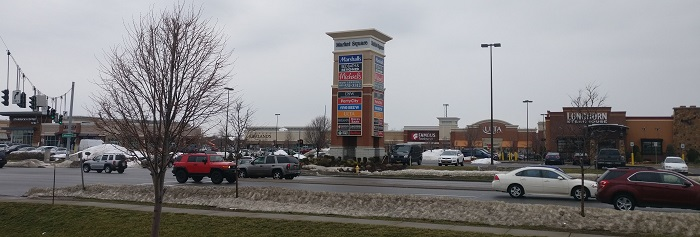
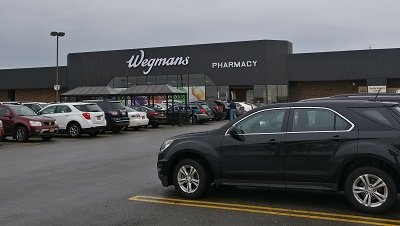

Jefferson Road
The main road off of RIT is known as Jefferson Road. The road itself has the majority of chain restaurants and shopping centers that one would ask for, making things very convenient for RIT students. Additionally, there are some areas of recreation, so there's almost always something to do with friends on the weekends.
For food of interest, Calios is to the right almost immediately off-campus. Notable due to their hours, late-night calzones are a staple of RIT students. Further ahead, Taichi is a popular spot for bubble tea and surprisingly good (albeit expensive) rice bowls. Further ahead is Sticky Lips BBQ, a solid BBQ option for locals that also visits RIT occasionally. Beyond that, most fast food, fast causal, and casual dining chains can be found somewhere on Jefferson Road or nearby.
For shopping, 5 major plazas fall along Jefferson Road. Jefferson Plaza, Southtown Plaza, Market Square, Market Plaza, and Henrietta Plaza all offer varied shopping options for most needs. Addionally Marketplace Mall is directly off of Jefferson Road, providing even more shopping options.
For recreation, Altitude Trampoline Park is within Southtown Plaza, Regal Henrietta is nearby. Various recreational spots also exist within Marketplace Mall. If interested in card and board games, both Millenium Games and Hammergirl Anime offer various differing options.
There's also a Wegmans. Wegmans is wonderful. Best grocery store.
